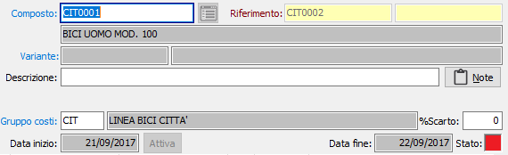
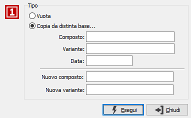
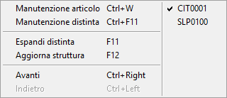
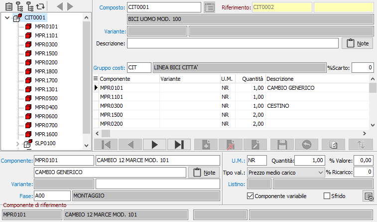
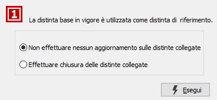
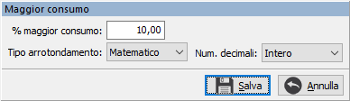

Gestione distinta base
La procedura consente l'inserimento e la manutenzione della distinta base, nella quale viene specificata la composizione di un determinato prodotto. È possibile inserire singole distinte ed utilizzarle come punto di riferimento per la creazione di altre distinte, che siano uguali o per cui solo alcuni componenti o singole quantità siano diverse.
In base alla versione installata è possibile attivare specifiche configurazioni, che determinano l'utilizzo di particolari campi o la presenza di alcuni vincoli in fase di manutenzione.
Se attivata la gestione delle varianti sarà richiesto e visualizzato, nelle varie sezioni della finestra e sia per i composti che per i componenti, il codice della variante.
Se attivata la gestione delle date di competenza (solo OS1 Enterprise) sarà visualizzato a destra nella finestra, un pannello di stato colorato:


Se viene premuto il pulsante Nuovo, sulla toolbar, prima di accedere all'inserimento dei dati compare la finestra a lato, dalla quale è possibile indicare se si vuole inserire una nuova distinta, oppure copiare i dati da una distinta già inserita. In quest'ultimo caso sarà richiesto il codice del composto da cui copiare i dati, la data di riferimento, se attiva la gestione date di validità, ed il nome del nuovo composto su cui copiare i dati. La pressione del pulsante Esegui riporterà alla finestra di manutenzione, con i dati già riportati ed in stato di inserimento.
La finestra di inserimento dati presenta, sulla sinistra, una sezione dove viene riportata in forma grafica la composizione della distinta; i composti ed i componenti appaiono con immagini diverse e sui composti è possibile visualizzare i relativi componenti e così via. Con il doppio clic del mouse, sui vari composti è possibile visualizzare i relativi componenti.
Sopra la struttura grafica è presente una barra di pulsanti che sono utilizzati per funzioni di utilità esposte più avanti e per spostarsi tra le distinte base che sono state richiamate, tramite l'apposito pulsante, in sequenza. Le funzioni dei pulsanti sono anche attivabili tramite il bottone destro del mouse, che richiama il menù a lato

; da questo menù è possibile visualizzare, nella parte destra, le distinte base eventualmente già richiamate. Le funzioni dei pulsanti, e di conseguenza del menù, sono tutte associate ad una specifica combinazione di tasti per l'utilizzo da tastiera se selezionata la struttura grafica, e sono le seguenti (da sinistra a destra):
-
-
consente di accedere alla manutenzione del prodotto selezionato nella struttura grafica (CTRL+W);
-
consente di accedere alla manutenzione della distinta base del prodotto selezionato nella struttura grafica, nel caso di componente senza distinta viene richiesto se inserirne una nuova (CTRL+F11);
-
espansione completa, nella struttura grafica, dei componenti semilavorati presenti nella distinta corrente (F11);
-
aggiornamento della struttura grafica (F12);
-
vai alla distinta precedente (CTRL+FRECCIA SINISTRA);
-
vai alla distinta successiva (CTRL+FRECCIA DESTRA).
La parte destra è riservata all'inserimento dei dati.

Dati generali
 COMPOSTO: codice del prodotto intestatario della distinta base. Sul campo sono disponibili le funzioni di ricerca (F9) ed accesso (CTRL+W) alla tabella prodotti. In stato di visualizzazione la ricerca consente di selezionare una distinta base. Nel caso che la distinta base sia di una distinta di riferimento, è possibile con l'apposito bottone, visualizzare le distinte riferite alla corrente. In questo
COMPOSTO: codice del prodotto intestatario della distinta base. Sul campo sono disponibili le funzioni di ricerca (F9) ed accesso (CTRL+W) alla tabella prodotti. In stato di visualizzazione la ricerca consente di selezionare una distinta base. Nel caso che la distinta base sia di una distinta di riferimento, è possibile con l'apposito bottone, visualizzare le distinte riferite alla corrente. In questo

caso, qualsiasi operazione di cancellazione potrebbe interessare le distinte riferite; nel caso venga compiuta questa operazione compare la finestra a lato che consente di decidere se effettuare l'aggiornamento sulle distinte collegate. L'esempio è relativo alla cancellazione o disattivazione di una distinta con gestione delle date di validità.
RIFERIMENTO: codice del prodotto, la cui distinta base è di riferimento, per l'attuale. In questo caso le righe dei componenti saranno evidenziate se non modificate rispetto alla distinta di riferimento. Sul campo sono attive le funzioni di ricerca (F9) sulle distinte base non riferite.
DESCRIZIONE: descrizione della distinta base.
NOTE: campo note esteso per eventuali commenti o annotazioni relative alla distinta richiamabile tramite l'apposito pulsante.
SCHEDA LAVORAZIONE: eventuale codice della scheda di lavorazione da associare alla distinta corrente. Sul campo sono attive le funzioni di ricerca (F9) ed accesso (CTRL+W) alla tabella omonima.
GRUPPO COSTI: indica il gruppo dei costi di produzione a cui fa riferimento il composto, presente nella tabella Gruppi costi di produzione. Sul campo sono attive le funzioni di ricerca (F9).
Dati dei componenti
COMPONENTE: codice del prodotto componente della distinta in esame. Sul campo sono disponibili le funzioni di ricerca (F9) ed accesso (CTRL+W) alla tabella prodotti. Nel caso che la distinta sia riferita ad un'altra nella sezione in basso compaiono il codice e la descrizione del componente originale.
DESCRIZIONE: descrizione interna del componente.
NOTE: campo note esteso per eventuali commenti o annotazioni relative al componente.
VARIABILE: definisce se il componente è da considerarsi variabile (casella con segno di spunta) o fisso (casella vuota). Questa prestazione è disponibile solo per la versione Enterprise e deve essere attivata tramite la configurazione distinta base.
UM.: unità di misura del componente all'interno della distinta base. Sul campo sono disponibili le funzioni di ricerca (F9) ed accesso (CTRL+W) alla tabella omonima.
QUANTITÀ: definisce la quantità necessaria del componente per la composizione del prodotto.
%VALORE: definisce la percentuale, del componente, sul valore del composto.
TIPO VALORIZZAZIONE: indica l'eventuale tipo di valorizzazione da applicare al componente corrente. Valori possibili:
-
-
-
Nessuna
-
Prezzo medio di carico
-
Costo ultimo carico
-
Costo di mercato
-
Prezzo di vendita
-
Prezzo di listino
LISTINO: eventuale codice del listino prezzi da utilizzare per ricercare il costo del componente. Sul campo sono attive le funzioni di ricerca (F9) ed accesso (CTRL+W) alla tabella listini.
%RICARICO: eventuale percentuale di maggiorazione da applicare al costo del componente.
SFRIDO: attivo solo se gestito da configurazione; consente di specificare che il prodotto non è un componente, ma l'eventuale residuo della lavorazione del composto (casella con segno di spunta).
Nel caso si utilizzi una versione Enterprise con attivo il modulo del conto lavoro sarà presente, per ogni componente il codice della fase di lavorazione, presente nel ciclo di produzione del prodotto, nella quale il componente deve essere utilizzato.
 è possibile, tramite questo pulsante, applicare al fabbisogno base un eventuale maggior consumo percentuale del componente. La percentuale viene applicata al fabbisogno complessivo ed il valore calcolato può essere arrotondato (per eccesso, per difetto, matematicamente) al numero di decimali indicati sul componente stesso. Il pulsante cambia colore se è presente la percentuale sul componente passando dal bianco al blu.
è possibile, tramite questo pulsante, applicare al fabbisogno base un eventuale maggior consumo percentuale del componente. La percentuale viene applicata al fabbisogno complessivo ed il valore calcolato può essere arrotondato (per eccesso, per difetto, matematicamente) al numero di decimali indicati sul componente stesso. Il pulsante cambia colore se è presente la percentuale sul componente passando dal bianco al blu.
